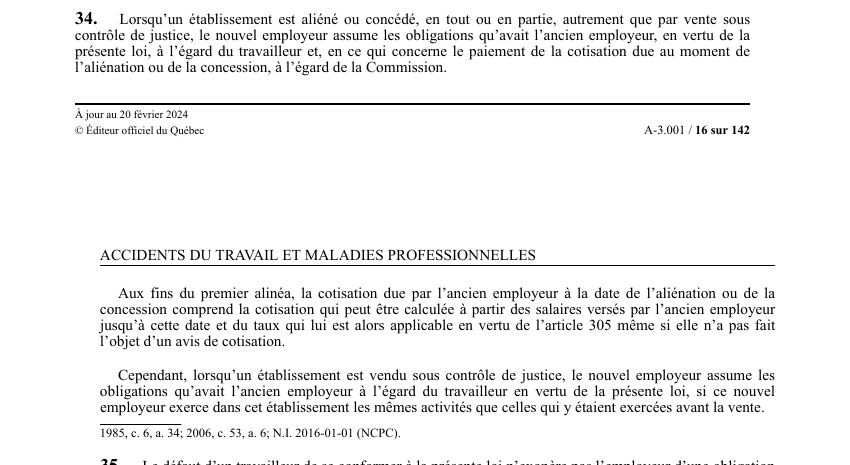

art-34-LATMP : transfert d'établissement : reprise des obligations
Un article du wiki ⚖️ Recueil législatif
🌐 LegisQuébec · 📄 PDF officiel (page 16)
Texte officiel : capture du PDF

🔗 Ouvrir a cette page : LATMP.pdf : page 16 · texte a jour au 20 février 2024
En bref
Lorsqu'un établissement est aliéné ou concédé, en tout ou en partie, autrement que par vente sous contrôle de justice.
- Le nouvel employeur assume les obligations de l'ancien à l'égard du travailleur.
- Le nouvel employeur reprend les obligations de l'ancien (travailleur et cotisation due).
- En cas de vente sous contrôle de justice : reprise seulement si les mêmes.
- Cotisation due calculée en vertu de l'art. 305.
Voir aussi
- art. 33 · faculté : un employeur ne peut exiger ni recevoir une contribution d'un travailleur pour une obligation que la loi lui impose.
- art. 35 · le défaut d'un travailleur de se conformer à la loi n'exonère pas l'employeur de ses obligations, et le défaut d'un employeur n'exonère pas le travailleur des siennes.
- art. 305 · la Commission cotise annuellement l'employeur au taux applicable 4 l'unité dans laquelle il est classé ou, le cas échéant, au taux personnalisé qui lui est applicable.
- ↑ Loi : LATMP
Pages qui pointent ici (3)
- art-33-LATMP, employeur ne peut exiger Recueil législatif
- art-35-LATMP, défaut travailleur se conformer Recueil législatif
- art-8.4-LATMP, articles ne s appliquent Recueil législatif